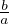

Teravnurga α siinuseks nimetatakse tema vastaskaateti ja hüpotenuusi suhet:
sin α = , kus a on vastaskaatet ja c on hüpotenuus.
Teravnurga α koosinuseks nimetatakse tema lähiskaateti ja hüpotenuusi suhet:
cos α = , kus b on lähiskaatet ja c on hüpotenuus.
Teravnurga α tangensiks nimetatakse tema vastaskaateti ja lähiskaateti suhet:
tan α =
 , kus a on vastaskaatet ja b on lähiskaatet.
, kus a on vastaskaatet ja b on lähiskaatet.Teravnurga α kootangensiks nimetatakse tema lähiskaateti ja vastaskaateti suhet:
cot α = , kus a on lähiskaatet ja b on vastaskaatet.